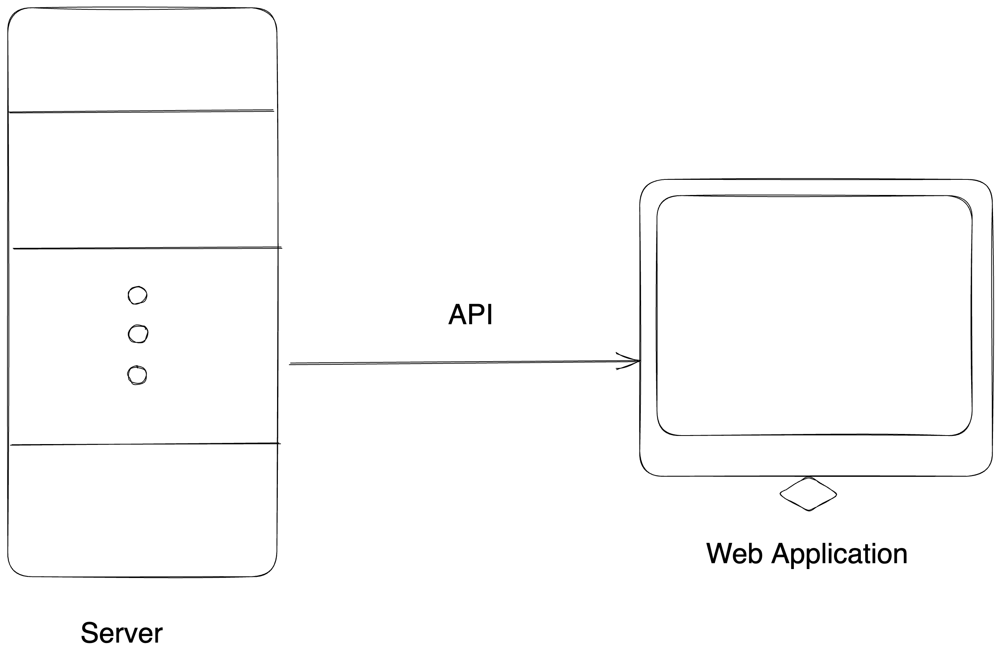

How to build Backend For Frontend with WunderGraph!
Traditional Web Application

Projects get complex & teams grow
React introduced two important things:
- UI Reactivity
- Component Driven Development
Making the UI react to states
New generation of SPA friendly frameworks
- React Router
- Next.js
- Gatsby
- React Query
- Blitz
Somehow the web got slow in the SPA age...
Let's take a look at the app built with Next.js
Tools App
Lets say on average our code has 50 characters in a line
The app is 100kb => browser has executed 2000 lines of JavaScript
What if we built the webpage with HTML?
Same app but built with HTML:
Tools
Behold! the next generation of Frontend Frameworks!
- Astro
- Next.js 13
- Fresh
- Is-land by 11ty
All of them support the new Islands Architecture
Same app but built with Astro:
Tools
We are hiring!
hiring@oslash.com
oslash.com/careers
Thank You!
Twitter: @dani_akash_